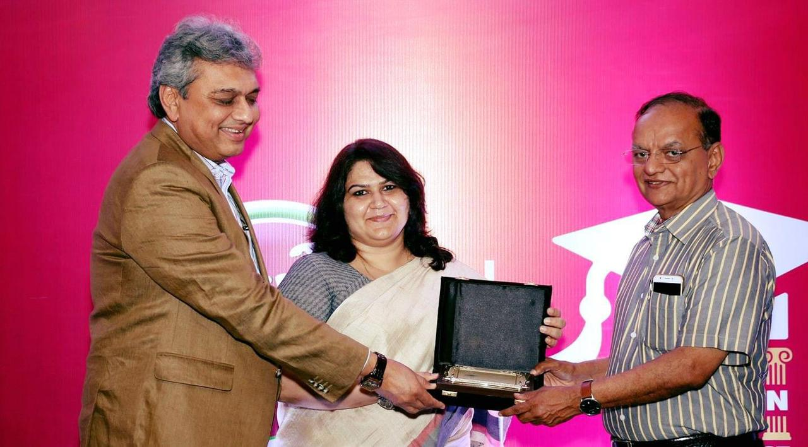

Awards & Distinctions


Boards & Committees
- Chairperson, Indian Society of Criminology
- Executive Member, Global Alliance for Justice Education
- Executive Doctrinal Study Member, International Association of Law School
- University Ambassador, Association of Commonwealth Universities
Corporate Directorships
- Director, Nirma Ltd. (Nirma Group of Companies)
- Director, Chiripal Polyfilms (Chiripal Group)
- Director, The Kalupur Commercial Cooperative Bank
- Director, NFSU Research and Innovation Council (sec. 8 Company)
Editorial Board Member
- Reviewer of Indian Societyof Criminology, SAGE Peer Review Journal, New Delhi
- Reviewer of Shastri Indo Canadian for various programmes/fellowships / scholarships & grants, New Delhi
- Reviewer of Journal of Sharia and Law, UAE
- Chief Executive, Journal of Centre for the study of Law and Governance ISSN 2348-7801
- Editor-in-Chief, Journal of Centre for Social Science ISSN 2348- 599X
- Editor-in-Chief, Journalof Centre for Criminal Law and Justice
- Editor-in-Chief, Journal of Centre for Alternate Dispute Resolution ISSN 2454-9932
- Editor-in-Chief, Nirma University Law Journal, ISSN 2249-1430
- Editor-in-Chief, Journalof Intellectual PropertyLaw, ISSN 2455-0361
- Editor-in-Chief Journalof Forensic Justice
- Editor-in-Chief Journalof Artificial Intelligence and Law
Administrative Achievements
- With 15 years of administrative experience, I have been instrumental in various aspects of university management:
- Strategic planning for university development
- Promotion of international collaborations
- Establishment of various academic positions at NFSU
- Contributions to alumni relations and continuing education support
Global Association/Recognition
- Visiting Professor HOF University. Germany
- Global Professor, Tashkent State Law University, Uzbekistan
Other Achievements
- Conceptualized and conducted over 100 invited talks/resource persons on a variety of subjects
- Consultant for NCRB on CRPI Act and CCTNS 2.0 under ICJS scheme
- Visiting faculty at the State Judicial Academy, Gujarat, and the National Judicial Academy
- Organized seminars and training programmes in association with NCW, NCPCR, BPR &D, I4C, NCRB

.png) purvipokhariyal@gmail.com
purvipokhariyal@gmail.com
.png) +91 99988 49689
+91 99988 49689
 2024
Prof. (Dr.) Purvi Pokhriyal
2024
Prof. (Dr.) Purvi Pokhriyal